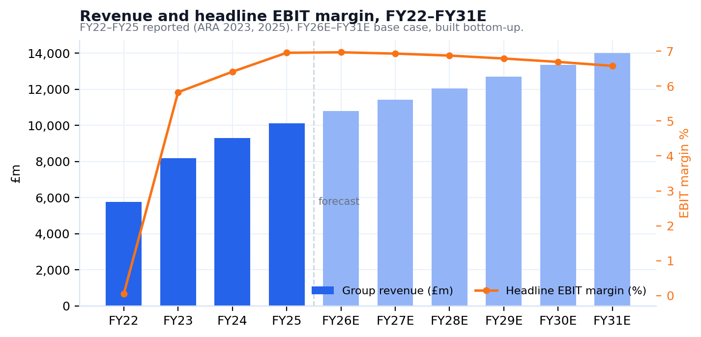
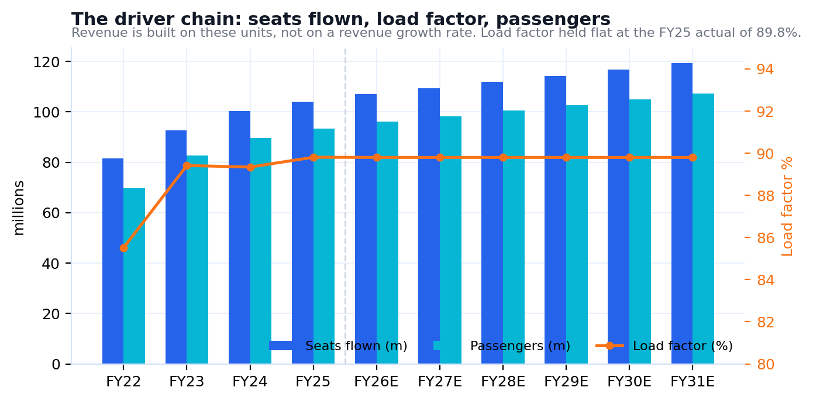
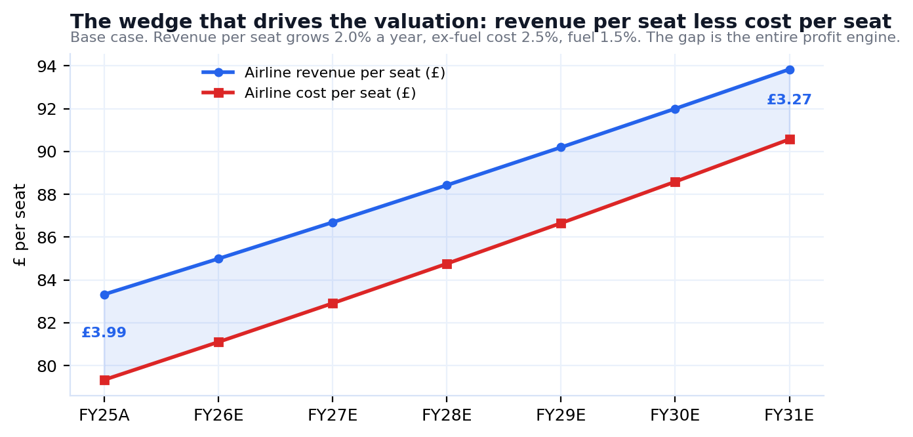
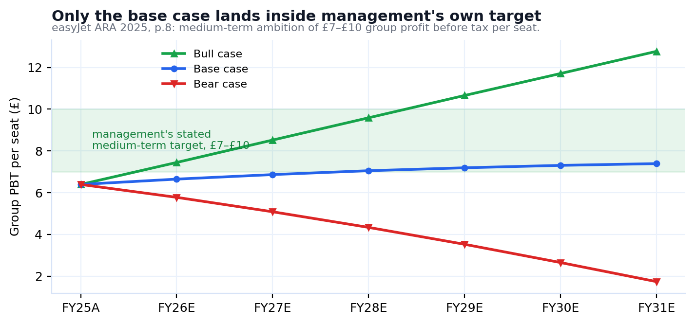
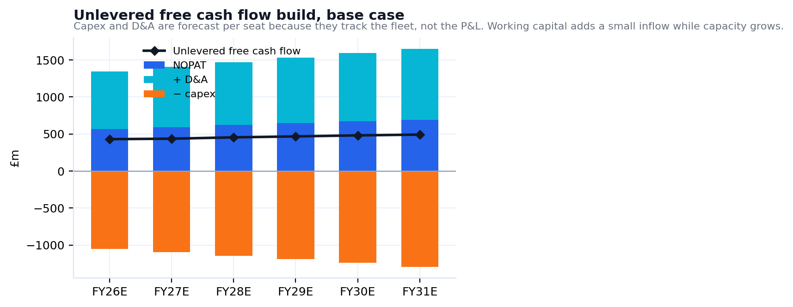
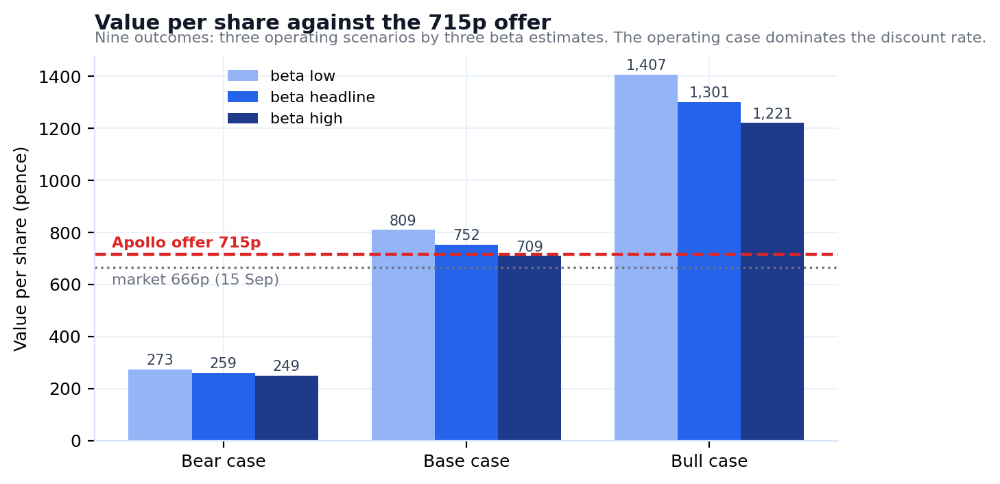

easyJet is a structurally better business than it was five years ago, and the offer arrives at the point where that improvement was about to show up in cash. FY25 delivered £10.1bn of revenue, £703m of headline EBIT and a £602m net cash position, with a fleet order running to FY34 already financed. Management's stated medium-term ambition is £7–£10 of group profit before tax per seat; FY25 came in at £6.39. The gap between those two numbers is the prize, and Apollo is buying it.
Our base case values easyJet at 752p per share against the 715p offer, light by 5.2%. But we would not lead with that number in isolation, because it is not robust to the operating case. Across three scenarios the range is 249p to 1,407p. That spread is not a modelling failure; it is what six years of operating leverage does to an airline earning about £4 of profit on an £85 seat. A 50 basis point wedge between revenue per seat and cost per seat, compounded, is the whole valuation.
What disciplines the range is management's own target. In our bear case, profit per seat falls to £1.74 by FY31, below anything easyJet has achieved outside the pandemic. In the bull case it reaches £12.77, above the top of management's range. Only the base case finishes inside £7–£10, and it does so from FY28, having been below the range in FY26 and FY27. That is the case we anchor to, and it is deliberately unheroic.
easyJet runs a short-haul point-to-point network from primary European airports, with a second, faster-growing business in package holidays. The two are modelled separately because they behave differently.
£9.1bn of FY25 revenue from 104.0m seats flown at an 89.8% load factor. Revenue per seat of £83.33 against a cost per seat of £79.34, giving a £3.99 margin on each seat sold. That thin spread is why this business is a leveraged bet on unit economics.
The growth engine and the strategic argument for the price. Materially higher margin than flying, asset-light, and it monetises passengers the airline already has. Modelled separately on customers and revenue per customer.
£602m of net cash at FY25, reconciled off the reported balance sheet to the £1m. One of very few European carriers to enter a downturn with no net debt, which is precisely what makes it attractive to a leveraged buyer.
| FY22 | FY23 | FY24 | FY25 | |
|---|---|---|---|---|
| Seats flown (m) | 81.5 | 92.6 | 100.4 | 104.0 |
| Passengers (m) | 69.7 | 82.8 | 89.7 | 93.4 |
| Load factor | 85.5% | 89.4% | 89.3% | 89.8% |
| Group revenue (£m) | 5,769 | 8,171 | 9,309 | 10,106 |
| Headline EBIT (£m) | 3 | 476 | 597 | 703 |
| Headline PBT (£m) | -178 | 455 | 610 | 665 |
| Fuel cost (£m) | 1,279 | 2,033 | 2,223 | 2,253 |
Source: easyJet Annual Report and Accounts 2023 (p.142, p.34) and 2025 (p.144, p.39). Headline basis, excluding non-headline items per note 5.

We do not forecast revenue. We forecast the units that produce it, and let revenue fall out. The chain is: seat capacity growth → seats flown → load factor → passengers → revenue per seat. The scenarios are not invented; capacity growth is inherited from EUROCONTROL's published European traffic forecast, whose own low, base and high cases become our bear, base and bull.

Two modelling choices are worth flagging because they materially affect the answer, and because both cut against us.


We discount unlevered free cash flow over six explicit years to FY31 and a terminal value thereafter. Because easyJet holds net cash, there is no debt to weight and the discount rate is simply the cost of equity.
| Input | Value | Where it comes from |
|---|---|---|
| Risk-free rate | 5.30% | UK 10-yr gilt, 16 Sep 2026, a 19-year high |
| Equity risk premium | 5.01% | Damodaran, Jan 2026: 4.23% mature + 0.78% UK |
| Beta (headline) | 1.46 | OLS, weekly returns to 2 Aug 2026, vs FTSE 100 |
| Beta (low / high) | 1.31 / 1.59 | Blume-adjusted / vs FTSE All-Share |
| Cost of equity | 12.61% | CAPM |
| Debt weighting (D/V) | 0% | Net cash of £602m, so no net debt to weight |
| Terminal growth | 2.0% | Bank of England inflation target |
| Shares outstanding | 758.6m | Per the Rule 2.7 Announcement |
We re-estimated it by OLS on weekly returns from August 2021 to the week ending 2 August 2026, the last complete week before the offer, against both the FTSE 100 and the FTSE All-Share. The FTSE 100 estimate is 1.46 (R² 0.180, standard error 0.194, t 7.54). A peer median of 1.37 (Wizz 1.83, IAG 1.60, Ryanair 1.14, Lufthansa 0.99) corroborates it by an independent route. Two-year windows were tested and discarded: R² of 0.08–0.10 and a confidence interval spanning 0.30 to 1.45 make them unusable.
For the record, the number this replaces was 1.71, taken off a screen over a deal-contaminated window. It was not absurd; it sits inside the 95% confidence interval at the top end. But it was unsourced, and an unsourced discount rate is where a valuation quietly stops being evidence.

| Component | £m |
|---|---|
| PV of explicit free cash flow, FY26–FY31 | 1,843 |
| PV of terminal value | 3,261 |
| Enterprise value | 5,104 |
| Terminal value as % of EV | 63.9% |
| Plus: net cash | 602 |
| Equity value | 5,706 |
| Value per share | 752p |
| Beta 1.31 | Beta 1.46 | Beta 1.59 | vs 715p offer | |
|---|---|---|---|---|
| Bear case | 273 | 259 | 249 | −63.8% |
| Base case | 809 | 752 | 709 | +5.2% |
| Bull case | 1,407 | 1,301 | 1,221 | +81.9% |
Read across, not down. The discount rate moves the answer by about £60 a share; the operating case moves it by more than £1,000. Anyone arguing about beta in this situation is arguing about the wrong variable.

This is a scheme of arrangement under Part 26 of the Companies Act 2006, not a contractual offer, which matters, because the approval mechanics are demanding.
| Term | Detail |
|---|---|
| Offer | 715p in cash per share; equity value c.£5.7bn |
| Offeror | Eagle Bidco Ltd, indirectly owned by the Apollo Funds |
| Structure | Scheme of arrangement, Part 26 Companies Act 2006 |
| Approvals | Court Meeting: majority in number, 75%+ in value. General Meeting: 75% of votes cast |
| Irrevocables | c.15.37%, being the Haji-Ioannou concert party 116,061,871 shares plus directors 427,767 |
| Share alternative | Unlisted Topco rollover shares 1:1, capped at 49.9% of Topco |
| Completion | Targeted by the end of Q1 2027 |
Source: Rule 2.7 Announcement, 6 August 2026, read at source on easyJet's investor site.
Our reading: the gap between 715p and our 752p base case is not large enough to call the offer opportunistic, but it is large enough that a bidder with 15% locked and a slipping timetable may have to pay for certainty. We would not accept at 715p. We would also not model a bump as the base case, because that is a view on negotiation, not on value.
We value easyJet at 752p against Apollo's 715p. The offer is light by about 5%, and light on every beta estimate except the most conservative, where it is fair. It is not a knock-down bid. It is a competent price for a business whose margin recovery is two years from showing up.
The more useful conclusion is about what the number depends on. Change the discount rate across its entire defensible range and the answer moves £60. Change the spread between revenue per seat and cost per seat by 50 basis points a year and the answer moves by more than £1,000. easyJet is not a rates story or a beta story. It is a unit-economics story, and the only external discipline available on that is management's own £7–£10 per seat target, which our base case reaches in FY28 and neither of the other two scenarios respects.
We would hold, vote against at 715p, and watch the 15 October scheme document deadline. If it slips again, the price is not the binding constraint. The regulator is.
Primary, read at source: easyJet Annual Report and Accounts 2025 (pp. 6, 8, 31, 39, 59, 144, 146, 148), ARA 2024 (p.35), ARA 2023 (pp. 34, 142, 146); Rule 2.7 Announcement, 6 August 2026; RNS of 25 August 2026. Derived: beta, by OLS on weekly adjusted-close returns from Yahoo Finance, Aug 2021 to 2 Aug 2026 (261 observations; underlying data retained). Third-party: EUROCONTROL European traffic forecast for capacity scenarios; Damodaran country risk premiums, January 2026 vintage, for the equity risk premium.
This report is produced for educational and portfolio demonstration purposes only. It does not constitute investment advice. The author holds no position in easyJet plc. All figures are computed live from the accompanying valuation model; none are retyped. Valuation date 16 September 2026.